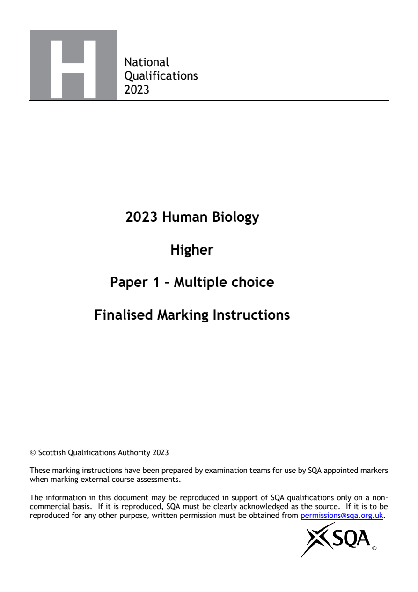
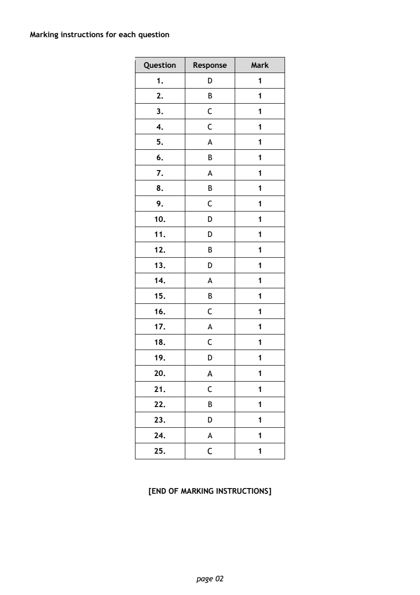

2023 Higher Human Biology - Paper 1 marking instructions
Source: Scottish Qualifications Authority (SQA) / Qualifications Scotland. This is a StemInteract HTML companion, not an official HTML edition. Extracted text is supplied alongside unaltered page images; use the images or original PDF for table layout, diagrams and symbols.
Jump to a question
PDF page 1

Selectable page text
National
Qualifications
2023
2023 Human Biology
Higher
Paper 1 – Multiple choice
Finalised Marking Instructions
© Scottish Qualifications Authority 2023
These marking instructions have been prepared by examination teams for use by SQA appointed markers
when marking external course assessments.
The information in this document may be reproduced in support of SQA qualifications only on a non-
commercial basis. If it is reproduced, SQA must be clearly acknowledged as the source. If it is to be
reproduced for any other purpose, written permission must be obtained from permissions@sqa.org.uk.
©PDF page 2
Question 1Question 2Question 3Question 4Question 5Question 6Question 7Question 8Question 9Question 10Question 11Question 12Question 13Question 14Question 15Question 16Question 17Question 18Question 19Question 20Question 21Question 22Question 23Question 24Question 25
Selectable page text
Marking instructions for each question
Question Response Mark
1. D 1
2. B 1
3. C 1
4. C 1
5. A 1
6. B 1
7. A 1
8. B 1
9. C 1
10. D 1
11. D 1
12. B 1
13. D 1
14. A 1
15. B 1
16. C 1
17. A 1
18. C 1
19. D 1
20. A 1
21. C 1
22. B 1
23. D 1
24. A 1
25. C 1
[END OF MARKING INSTRUCTIONS]
page 02